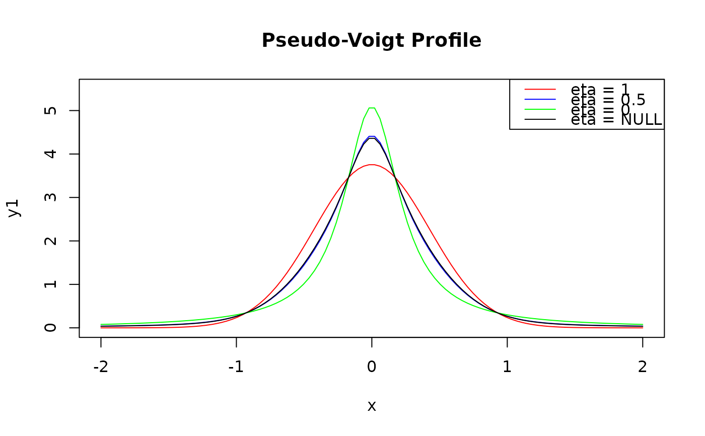

The pseudo-Voigt function is a linear combination of the Gaussian and Lorentzian functions,
weighted by a mixing parameter \(\eta\) (eta) that determines the relative
contribution of each component.
Arguments
- x
A numeric vector representing the independent variable (e.g., wavelength or frequency).
- y0
A numeric value specifying the baseline offset.
- xc
A numeric value representing the center of the peak.
- wG
A numeric value specifying the Gaussian full width at half maximum (FWHM).
- wL
A numeric value specifying the Lorentzian FWHM.
- A
A numeric value representing the peak area.
- eta
A numeric value between 0 and 1, representing the mixing parameter.
Value
A numeric vector of the same length as x, containing the
computed pseudo-Voigt function values.
Details
The Pseudo-Voigt function is given by:
$$f(x) = y_0 + A \cdot [ \eta \cdot L(x, x_c, w_L) + (1 - \eta) \cdot G(x, x_c, w_G)]$$
where:
\(A\) is the peak area
\(y_0\) is the baseline offset
\(G(x, x_0, w_G)\) is the Gaussian component with center \(x_c\) and the full width at half maximum \(w_G\)
\(L(x, x_0, w_G)\) is the Lorentzian component with center \(x_c\) and the full width at half maximum \(w_L\)
\(\eta\) is the mixing parameter, with \(0 < \eta < 1\). The mixing parameter \(\eta\) allows the pseudo-Voigt function to describe a wide range of line shapes, from pure Gaussian (\(\eta = 0\)) to pure Lorentzian (\(\eta = 1\)), and various intermediate shapes in between.
Examples
x <- seq(-2, 2, length.out = 100)
y1 <- pseudo_voigt(x, y0 = 0, xc = 0, wG = 1, wL = 0.5, A = 2, eta = 0)
y2 <- pseudo_voigt(x, y0 = 0, xc = 0, wG = 1, wL = 0.5, A = 2, eta = 0.5)
y3 <- pseudo_voigt(x, y0 = 0, xc = 0, wG = 1, wL = 0.5, A = 2, eta = 1)
plot(x, y1, type = "l", col = "red", main = "Pseudo-Voigt Profile", ylim = c(0, 2.5))
lines(x, y2, col = "blue")
lines(x, y3, col = "green")
legend("topright", legend = c("eta = 1", "eta = 0.5", "eta = 0"),
col = c("red", "blue", "green"), lty = 1)
